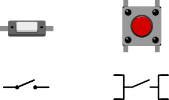
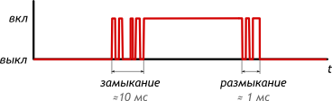
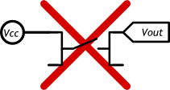

Кнопка
Тактовая кнопка — простой, всем известный механизм, замыкающий цепь пока есть давление на толкатель.

Кнопки с 4 контактами стоит рассматривать, как 2 пары рельс, которые соединяются при нажатии.
Эффект дребезга

При замыкании и размыкании между пластинами кнопки возникают микроискры, провоцирующие до десятка переключений за несколько миллисекунд. Явление называется дребезгом (англ. bounce). Это нужно учитывать, если необходимо фиксировать «клики».
Схема подключения
Напрашивается подключение напрямую. Но это наивный, неверный способ.

Пока кнопка нажата, выходное напряжение Vout = Vcc, но пока она отпущена, Vout ≠ 0. Кнопка и провода в этом случае работают как антенна, и Vout будет «шуметь», принимая случайные значения «из воздуха».
Пока соединения нет, необходимо дать резервный, слабый путь, делающий напряжение определённым. Для этого используют один из двух вариантов.
Схема со стягивающим резистором

- Есть нажатие: Vout = Vcc
- Нет нажатия: Vout = 0
Схема с подтягивающим резистором

- Есть нажатие: Vout = 0
- Нет нажатия: Vout = Vcc